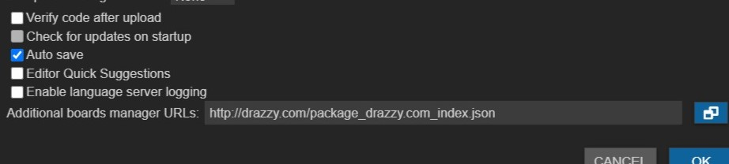
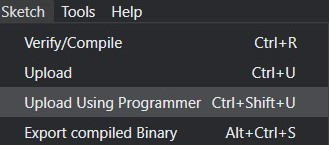

Now in this topic we will be talking about programming and testing the PCB I made in the previous topic. I will be testing the Tiny412 Helloboard and it will come to life! First off we need to set up Arduino IDE so that I can communicate with the board. Arduino IDE needs to be configured to be able to recongise the Tiny412 Helloboard. Thus in order in to do that, we need to install the core into Arduino IDE. To start off, we need to search online for an appropriate core to download so that we can install in Arduino IDE. We found a suitable Tiny412 core on SpenceKondes gitHub repository. As you can see in the pictures below we copied the url address of the core and pasted it in Arduino.
Following that we needed to install the core into the arduino system via the boards manager. Now that the url for where the core is pasted in, the desired core will be visible in the manager. The only thing we need to do is to install the latest version of the supported core. Below is an image of the core visible in the boards manager.
Next up is to set up the settings and select some options on how the board will run. First, head down to tools and select the right board, in my case its the Tiny412.
After that select the approriate COM port, in my case its COM port 6. However if it isnt seen, plug your PCB out restart your computer and plug it back in, you should be able to see it. In order to find out what COM port you are using you can see it in the device manager, as seen below.
Following that, select the board options that depend on your PCB. This can we done in the tools tab as seen below.
For my board here are the options:
For the rest of the options, I set it on the default pre-selected options.
Now we can write a simple code that will test the circuit and whether the board works! Below is a simple code that instructs the board to blink every half a second.
After the code is checked and compiled, it is ready to be uploaded. Uploading a sketch using the standard procedure needs the presence of the bootloader. Since there isnt a bootloader, upload using programmer option is needed to be selected in the sketch tab. In the image below you can see the selection made.
Upon uploading it, it seems as though the board isnt responding, after consulting Mr Chew, my lecturer, he says that my board isnt soldered well! Some pads had too much solder some has no solder... But rest assured Mr Chew encouraged me, with more experience my soldering will get better!
And after some playing around and testing my board is fully funtional! Here is a video of it blinking every time I press the push button!!!
Click here to return back to documentations!!